Q
Q1:
Mill Hill Golf Club, Barnet Way/A1, nr. Highwood Hill
51°37'42.97"N, 0°15'10.09"W

THE AVENGERS:
The Thirteenth Hole (Roy Baker: Autumn
1965)
Reed (Patrick Allen) and Jackson (Victor Maddern) shoot a man at the 13th
hole, and when Steed (Patrick Macnee) and Mrs Peel (Diana Rigg) arrive to investigate at Craigleigh Golf
Club, they are met by Collins (Francis Matthews). Mrs Peel, watching
Adams (Peter Jones) play Reed, is attacked by a golf cart, but later
helps Steed to win against Reed. Reed captures Mrs Peel when Steed plays Adams,
and
DEPARTMENT S:
Handicap Dead (John Gilling: Summer 1968)
At During a tournament at Colindale Golf Club,

DANGER MAN:
Under the Lake (Seth Holt: 1959)
John Drake is in Zurich with Colonel Keller watching the ex-Nazi general Von
Klaus (Christopher Rhodes) and his daughter, Mitzi (Moira Redmond)
leave an office block (Bonus Print building, demolished) and drive off
in a chauffeur driven car.
DANGER MAN: The
Ubiquitous Mr. Lovegrove
(Don Chaffey: September 1964)
John Drake is seen driving his car past the A1/Barnet Lane Roundabout and North
up the A1 on his way to a meeting at
THE SAINT:
The Rhine Maiden (James Hill: November
1964)
Simon Templar and Julia Harrison race to Offenberg in Simon's Volvo
THE AVENGERS:
How to Succeed ... at Murder (Don
Leaver: February 1966)
Mrs Peel (Diana Rigg)
in her Lotus follows Mary Merryweather
in her car along Ripon Way on to Stirling Way as they head towards the keep fit
class.
51°38'53.26"N , 0°15'7.71"W
THE AVENGERS: Super Secret Cypher Snatch (John Hough: June
1968)
Vickers (Donald Gee) and Maskin
(Simon Oats) follow Peters (John Carlisle) back to his flat (corner
of Ripon Way & Stangate
Crescent, now demolished) in a CGC van and Vickers shoots him through a
window. Later Tara King (Linda Thorson) slides down a ladder from the same
window.
(Identified by Patrick Walsh, October 2003)
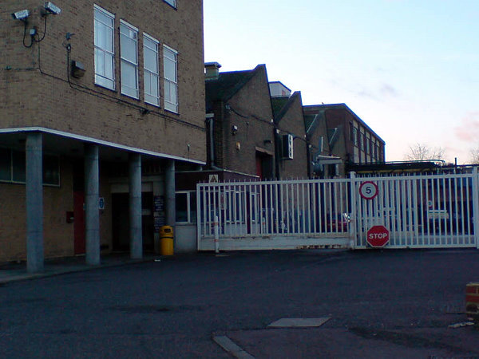
photo: Geoff Dodd
51°38'42.51"N, 0°15'15.04"W
DEPARTMENT S: The Shift That Never Was
(John Gilling:
Autumn 1968)
Bellman-Parsons Chemical Company,
(Identified by Geoff Dodd, December 2004)
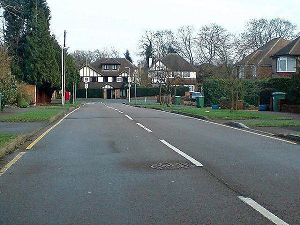
photo: Geoff Dodd
THE HUMAN JUNGLE:Wild
Goose Chase (Vernon Sewell: ???)
A police car arrives to investigate a suspected burglar who calls himself
‘William Jones’ (Vladek Shaybal). Detective Constable Cowan (John
Bonney) takes him in for questioning.
(Identified by Geoff Dodd, October 2013)
THE AVENGERS:
Quick-Quick Slow Death (James Hill:
October 1965)
Willi Fehr (Michael
Peake) chases
his pram as it runs down hill. It crashes depositing the corpse inside onto the
pavement (corner of Deacons Hill Road and The Rise and shots of Fehr running
after the pram along The Rise).
(Spotted by Michael Richardson, 1989)
THE AVENGERS:
Requiem (Don Chaffey: January 1969)
After Mother's funeral Tara (Linda Thorson), Major Firth (John
Cairney) and the Jill (Kathja Wyeth) a nurse drive the a hearse to
the home of Steed's friend Cleaver (Harvey Ashby). Murray (Denis
Shaw) and Rista (Terence Sewards) leave the house and drive off in
the van just as the hurse arrives. Firth goes to the house, 25 Cranbrook Road (25
The Rise) but when Bobby Cleaver (Harvey Ashby) opens the door he
collapses and dies.
Q4:
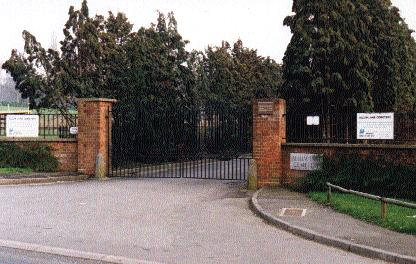
DEPARTMENT S:
The Double Death of Charlie Crippen (John Gilling: Summer 1968)
Jason King (Peter Wyngarde)
arrives at the gates of Villa Fantelle
in his maroon Bentley and attempts to talk his way past the guards. Later
Curtis (Dennis Alaba
Peters) persuades the guard to allow him and the rest of the team into the
villa.
DEPARTMENT S:
Spencer Bodily is Sixty Years Old
(Leslie Norman: 1969)
Spencer Bodily's
remains are stolen and taken to be disposed of at Fernvale Crematorium.
DEPARTMENT S:
The Duplicated Man (Paul Dickson: Spring
1969)
Annabelle Hurst arrives at the gates of '
JASON KING:
A Page Before Dying (Jeremy Summers:
1971)
Ryland watches from across the border as a hearse carries a coffin into a
Q5:
Elstree Hill Lodge,
THE AVENGERS:
Epic (James Hill: February 1967)
Steed (Patrick Macnee)
and Mrs Peel (Diana Rigg)
turn down
Q6:
Elstree Lawns,

THE PROTECTORS:
The Tiger and the Goat (Jeremy Summers:
1973)
Commander Whiting lures the Contessa
to a meeting in a derelict house.
Q7:
Chantry,

photo:
Geoff Dodd
RANDALL AND HOPKIRK
[DECEASED]: All Work and No Pay
(Jeremy Summers: Early 1969)
Jeanie is summoned to the Foster brothers’ mansion to start her work with them
(she drives along Barnet Lane outside Chantry heading West).
(Identified by Geoff Dodd, September 2009)

HAMMER HOUSE OF
MYSTERY AND SUSPENSE: Mark of the Devil
(Val Guest: Spring 1984)
Matt Halston's
(John Paul) family home where he celebrates the engagement and marriage
of his daughter Sara (Jenny Seagrove) to Frank Rowlett (Dirk
Benedict), although the wedding party is interrupted by a visit from
Detective Inspector Grant (George Sewell) and Sergeant Kirby (Peter Settelen).
Q8:
Edgwarebury Hotel,
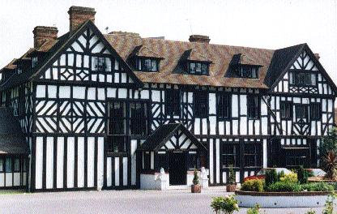
SABER OF
Saber and Pete
arrive at Bowden Manor to talk to Mrs Cartney.
SABER OF
Mr Danbury (Neil Hallet)
arrives at the house of Stephen Barnard.
THE MAN FROM INTERPOL:
Soul Pedlars (Max Varnel: 1957/59)
A trusted servant is caught stealing at Rossington Manor.
SABER OF
Sir Charles Orden
arrives home with his new wife.
H. G. WELLS'
INVISIBLE MAN: Picnic With Death
(Pennington Richards: 1958)
Brady visits Fox Grange, the Norton family home with Dee (Lisa Daniely) only to
find that the Nortons
and Sally have left on a picnic. He follows on horseback.
DANGER MAN:
The Vacation (Patrick McGoohan: 1960)
Georges (John Wynyard) shows Drake (Patrick McGoohan) down to the tennis court
where he meets Veronica Baron (Jaqueline Ellis) and asks her to demonstrate her game
with Marcel. They are interrupted by the arrival of Ricki Clermont (Richard Clarke)
who is warned off by Baron (Esmond Knight).
THE AVENGERS:
You Have Just Been Murdered (Robert
Asher: July 1967)
Mrs Peel (Diana Rigg)
watches Rathbone
leave Unwin's
house. Steed arrives at Unwin's
and later fires a tracer onto the money case as Unwin (
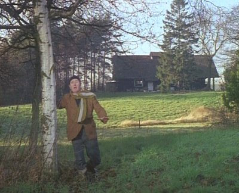
The Norwegian Barn - destroyed by fire
THE AVENGERS:
The Curious Case of the Countless Clues
(Don Sharp: January 1968)
Using a rifle wrapped in plastic, Earle (Anthony Bate) guns down Scott
as he waters plants by his log cabin (The Norwegian Barn - destroyed by
fire). Earle (Anthony Bate) and Gardiner (Kenneth Cope) watch
Steed and Burgess at Burgess' home from their Citroen. Later they observe as
Doyle arrives to arrest Burgess. Later Steed (Patrick Macnee), in his Bentley, follows
Earle and Gardiner to their cottage (Edgwarebury gate house). He later
escapes only to have his car break down just as Stanley (Tony Selby)
turns up in his break-down van.
RANDALL AND HOPKIRK
[DECEASED]: Who Killed Cock Robin?
(Roy Ward Baker: August 1968)
Jeff's Vauxhall arrives at the Howe family home. Beeches (David Lodge) goes on
the run, is returned by the police and tends to the rear lawns.
THE AVENGERS:
Wish You Were Here (Don Chaffey:
September 1968)
Tara (Linda Thorson) arrives at the Elizabethan Hotel in her Lotus, but
is unable to leave when her car fails to start. Basil (Brook Williams)
arrives and unloads his
DEPARTMENT S:
A Ticket to Nowhere (Cyril Frankel:
Early 1969)
The hotel is the villain's HQ, Westerly Grange.
DEPARTMENT S:
The Perfect Operation (Cyril Frankel:
February 1969)
Jason talks to Sir Curtis whilst they play croquet.
DEPARTMENT S:
The Mysterious Man in the Flying Machine
(Cyril Frankel: Spring 1969)
Gerrard (
RANDALL AND HOPKIRK
[DECEASED]: The House on Haunted Hill
(Ray Austin: Summer 1969)
Walter and Henry (Dermot Kelly) flee from the haunted Merston Manor, as
does Jeff (Mike Pratt) later on his visit. Jeff returns and breaks in at
the rear of the building. (There is also extensive use of the interior of
the hotel in this episode)
THE PERSUADERS!:A Death In the Family (Sidney Hayers: 1971)
Uncle Lance's house.
THE PROTECTORS:
The Numbers Game (Don Chaffey: 1972)
Dr. Lawrence Savage (Richard Easton) arrives at his home, The Old Barn, in his
Bentley and washes it before entering the house. Luigi (George Innes),
who has been hiding in the garage, removes a package from underneath the car
but is caught in the act by Harry (Robert Vaughn).
THE PROTECTORS:
The Bodyguards (Don Chaffey: 1972)
THE PROTECTORS:
Chase (Harry Booth: 1972)
Harry Rule (Peter Vaughn) and the Contessa (Nyree Dawn Porter) arrive at her log cabin (the
Norwegian Barn - destroyed by fire) in Harry's Jensen.
THE ADVENTURER:
Somebody Doesn't Like Me (Cyril Frankel:
1972)
Brady arrives in his car at a country club to meet Krista Magnus.
THE PROFFESIONALS:
In the Public Interest (Pennant Roberts:
1978)
George Cowley (Gordon Jackson) visits a restaurant to meet with Chief
Constable Gerry Green (Paul Hardwick). Later Cowley visits Green at home
to discuss his replacement.
HAMMER HOUSE OF
MYSTERY AND SUSPENSE: Mark of the Devil
(Val Guest: Spring 1984)
The Rowlett honeymoon hotel.
Television:
THRILLER: A
Coffin For The Bride (1974)
EASTENDERS (1987,1991,1992)
SHRINKS (1991)
THE DETECTIVES (1993)
CHANDLER AND CO.(First episode) (1994)
Films:
SONS OF THE SEA (1940)
STRANGER FROM VENUS (1954)
SCHOOL FOR SCOUNDRELS (1960)
HIDE AND SEEK (1963)
NIGHT MUST FALL (1964)
THE LIQUIDATOR (1966)
MOSQUITO SQUADRON (1969)
MY LOVER, MY SON (1970)
ENDLESS NIGHT (1971)
STARDUST (1974)
NOT NOW COMRADE (1976)
NEVER TOO YOUNG TO ROCK (1976)
STAND UP VIRGIN SOLDIERS (1977)
HAWKS (1988)
Q9: Windermere Hall, Stone Grove, Edgware
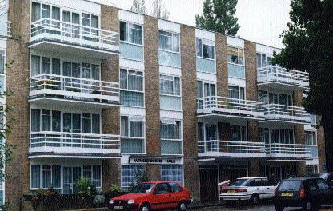
U.F.O.: Survival (Alan Perry: July 1969)
Foster (Michael Billington)
arrives at his girlfriend's flat. Later Alec Freeman (George Sewell)
goes there to tell her about the loss of Foster.
U.F.O.: The Responsibility Seat (Alan Perry: September
1969)
Straker's car
arrives at Jo Fraser's flat.
Q10: RAF Stanmore Park, London Road/Brockley Hill, Stanmore (redeveloped)

THE AVENGERS:
All Done With Mirrors (Ray Austin: May
1968)
Watney (Dinsdale Landen) drives
Q11: Stanmore Hall,

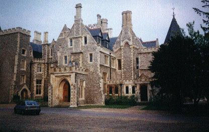
photos: Annette Hill
THE
SAINT: The Hi-Jackers (David Eaby: June/July 1964)
Hans Lasser's
country house. Jopley
turns through the main gates and returns to the house with Templar and Pargo.
THE SAINT:
The
The Schreiber Clinic.
THE SAINT:
The House on Dragon's Rock (Roger Moore:
February 1966)
Carmen (Annette André) arrives at the Dragon's Rock Research Institute
in her car after first being checked by a guard (Anthony Blackshaw) at the gate house, Simon
Templar (Roger Moore) also visits the Institute in his Volvo after
passing the same guard. Later Carmen sneaks Simon past the guard into the
Institute in her car.
THE BARON: The Man Outside (Roy Baker: September 1966) Vince arrives at the villain's hide-away with news of the inquest. The Baron drives through the gates in his Jensen and approaches the house. After talking to the only apparent occupant he leaves, then doubles back to investigate the stables. He is eventually captured when he returns to his car.
THE AVENGERS:
From Venus With Love (Robert Day:
October 1966)
Venus Browne leaves Brigadier Whitehead's house watched by Steed (Patrick Macnee) from his
Bentley.
THE AVENGERS:
The Winged Avenger (Gordon Flemyng/Peter Duffell: December
1966)
Mrs Peel and Steed arrive in the Bentley to see Professor
THE CHAMPIONS:
The Final Countdown (John Gilling: Early 1968)
The Nazis work on their atom bomb at their headquarters.
THE SAINT:
The Ex-King of Diamonds (Alvin Rakoff: Summer 1968)
Janine Flambeau arrives at her father's house in her Citroen 2CV.
RANDALL AND HOPKIRK
[DECEASED]: The Trouble With Women
(Cyril Frankel: Autumn 1968)
To get help for Jeff, Marty has to queue for a seance at the Society of Spiritualists
- North London Division.
RANDALL AND HOPKIRK
[DECEASED]: All Work and No Pay
(Jeremy Summers: Early 1969)
The strange Foster brothers (Alfred Burke and Dudley Foster) arrive back
at their huge house in their classic sports car.
THE ADVENTURER:
Icons Are Forever (Cyril Frankel: 1972)
Bradley infiltrates himself into the Castle Delguado whilst investigating the
mysterious death of a private investigator in
THE
PROFFESIONALS: Blind Run (Tom
Clegg: April 1978)
Doyle (Martin Shaw) arrives at the second meeting place with his Doctor Hanish (Kevork Malikyan) and Anwhar Handhal a.k.a. Tinkerbell (Ahmed
El-Shenawi).
There they meet Sinbad (Yashar
Adem) and Leia (Jasmina Hilton).
Soon after a car carrying Georgio
(Tariq Yunis)
and assorted assassins arrives.
THE PROFFESIONALS:
Need to Know (William Brayne: 1979)
Bodie (Martin
Shaw) and Doyle (Lewis Collins) take Cowley (Gordon Jackson)
to the mansion to which Cowley will be interrogated about Andy Drake by Manton (Patrick
O’Connell) and Tully (Simon Oats).
Film:
FRANKENSTEIN MUST BE DESTROYED (1969)
NOTHING BUT THE NIGHT (1972)
Television:
THRILLER: Come
Out, Come Out Wherever You Are (1974)
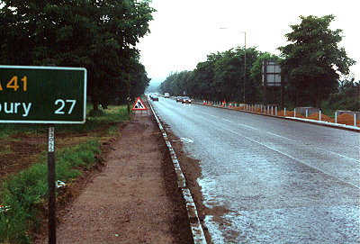
THE PRISONER:
Do Not Forsake Me Oh My Darling (Pat
Jackson: April 1966)
Potter follows Number 6 in his Lotus as he drives round a roundabout and along
the A20 to
Q13:
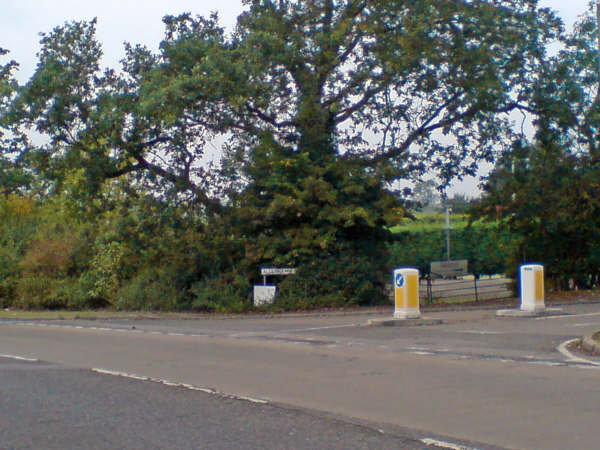
photo:
Geoff Dodd
GIDEON'S WAY:
The Alibi Man (Cyril Frankel: February
1965)
Eric Little drives Margorie
Bellman to the airport.
GIDEON'S WAY: The Housekeeper (Leslie Norman: 1965)
Martha Smallwood (Kay Walsh) is followed (along
(Spotted by JazWiseman
October, 2005)
GIDEON’S WAY: To Catch A Tiger (Les Norman, April 1965)
The offices of John Borgman
Enterprises Ltd. (Premier House,
(Identified by Geoff Dodd, April 2006)
THE BARON: Countdown (Robert Asher: October 1965)
Mannering and Cordelia
accompany the police back to this police station (rear yard of Edgeware police
station on
(Spotted by Geoff Dodd, December 2006)
RANDALL AND HOPKIRK
[DECEASED]: You Can Always Find a Fall
Guy (Ray Austin: July 1968)
Jeff negotiates his car out of the garage (junction of High Street and
(Spotted by Sam Denham)
RANDALL AND HOPKIRK
[DECEASED]: The Trouble with Women
(Cyril Frankel: October 1968)
In the Vauxhall Marty quizzes Jeff about his motives for taking on the case and
why he is following Paul Lang, in his limousine (back projection from junction
of High Street and
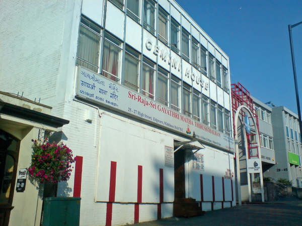
photo:
Geoff Dodd
THE PROTECTORS:
Blockbuster (Jeremy Summers: 1973)
Caroline (Nyree
Dawn Porter) checks out Glen Bailey’s spending habits at an exclusive car
dealership (London Sports Cars, Gemini House, 25-27 High Street).
(Identified by Bob Rocca,
July 2008)
Q15:
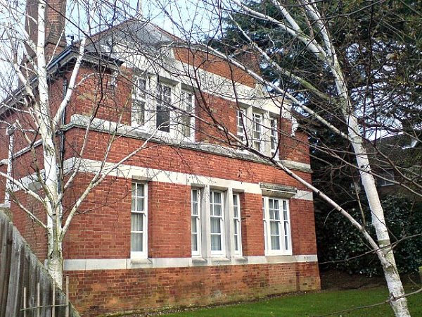
photo:
Geoff Dodd
THE SAINT: The Well
Meaning Mayor (Jeremy
Summers: 1963)
George Hackett is arrested and taken to the Seatondean Police Station.
GIDEON'S WAY:
Subway to Revenge (Roy Baker: January
1965)
Ellen Winters chides Jimmylane
for not reporting his attempted murder to the local police.
GIDEON’S WAY:
The Great Plane Robbery (Leslie Norman:
March-April 1965)
Gideon is at Bamford
Police station when Kautsky
is brought in for questioning.
THE CHAMPIONS:
The Fanatics (John Gilling: July 1967)
Craig and Sharon report the kidnapping of Richard Barrett to Tremayne from a
village police station.
THE SAINT:
Legacy For The Saint (Troy Ward Baker:
February 1968)
Simon arrives at the police station (
(Confirmed by Geoff Dodd)
Q16
THE SAINT:
The Time to Die (Roy Baker: April 1968)
After following the kidnapper's instructions, Simon Templar is driven to a
derelict church (the”
(Identified by Ian Pearse,
November 2003)

photo:
Geoff Dodd
THE SAINT:
The Man Who was Lucky (John Gilling: 1962)
Simon Templar (Roger Moore) takes Jane in his Volvo so that she can show
him the home of Lucky Joe Luckner.
They park across the street and Simon is not surprised to see a Scotland Yard
car parked outside. He also watches as a disappointed Inspector Teal leaves
with his men. Later Simon returns in his Volvo to set a trap for Luckner.
(Identified by Geoff Dodd, July 2005)
THE SAINT: When Spring is Sprung (Jim O'Connolly: March 1967)
Simon drives Joanne Dell to her destination on the Corniche.
(Identified by Geoff Dodd, July 2005)
Q18 Stonegrove House, Stonegrove, Edgware
GIDEON'S WAY:
Subway to Revenge (Roy Baker: 1965)
(Spotted by Jaz Wiseman, August 2005)
RANDALL AND HOPKIRK
[DECEASED]: Whoever Heard of a Ghost
Dying?
The clock on the
church seen late at night.
(Identified by Geoff Dodd, 27th May, 2006)
Q20: The Limes,

photo: Geoff
Dodd
THE PROTECTORS:
Vocal (Cyril Frankel: 1972)
Staking out the Pine Vale Country Club (private rexidence formerly The Limes Country
Club), , The Contessa
(Nyree Dawn
Porter) and Paul (Tony Anholt)
are both disguised as chauffeurs. Harry Rule (Robert Vaughn) watches
from his car. A limousine pulls up with John Azon (David Buck) and Gregg (Ian
Hogg) aboard. When someone from the country club tries to deliver a
consignment of drugs to Azon
things go horribly wrong.
Q21: Barham Avenue, Borehamwood

photo: Geoff Dodd
THE HUMAN JUNGLE: Skeleton in the
Cupboard (Roy Baker. ???)
The home of Dr Fisher (Allan Cuthbertson) where Dr. Corder (Herbert
Lom) goes to talk about the Brindley family (Hispania,1 Barham Avenue).
(Identified by Geoff Dodd, April 2013)
RETURN OF THE SAINT:
The Debt Collectors (Leslie Norman: 1978)
Simon Templar (Ian Ogilvy) takes Jerry (Mary Tamm) home after her
accident in the park. After the adventure is over Sir Charles (Geoffrey
Keen) arrives just in time to thank Templar.
(Identified by Alan Field, June 2008)
Q22: Hale Lane / Deans Lane, Edgware
H. G. WELLS'
INVISIBLE MAN: The Rocket
(Quentin Lawrence: 1959)
The lorry carrying the disguised rocket drives through the centre of town,
right past a policeman on point duty.
(Identified by Bob Rocca,
July 2008)

photo:
Alan Field
GIDEON’S WAY:
The Lady Killer (Leslie Norman:
September 1964)
Robert Carne drives to the country cottage where he and Marion Grove
are to stay.
(Identified by Alan Field, September 2008)
THE SAINT:
The Damsel In Distress (Peter Yates:
Aug/Sep 1964)
Allesandro and
Guido see Simon Templar being driven unconscious by Guyiseppe Rolfieri (Harold Kasket) away from his villa. They
give chase, but loose him at a junction. Guyiseppe and Arthur (Ray Austin) attempt
to stage an accident for The Saint, but Simon is able to steer his runaway
vehicle. Later Simon, Allesandro
and Guido kidnap Guyiseppe
and take him to Florence Aero Club.
(Identified by Alan Field, September 2008)
GIDEON’S WAY:
The Great Plane Robbery (Leslie Norman:
March-April 1965)
After leaving the Airport
with the stolen gold the robbers drive along the A134 where a decoy van driven
by Kautsky is waiting for them.
(Identified by Alan Field, September 2008)
THE SAINT:
The Saint Bids Diamonds (Leslie Norman,
April/May 1965)
Simon Templar is driven to Graner’s
villa by Madame Calliope. The next day, Graner travels the same road on his way
home. Later Christine Graner’s
drives Simon into town.
(Identified by Alan Field, September 2008)
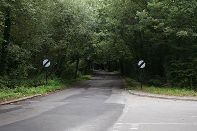
photo:
Alan Field
THE SAINT:
The Fast Women (Leslie Norman: September
1966)
After driving away from his
hotel Carl Tordoff is perused by Simon Templar and
Paddy in Templar’s Volvo through the countryside.
(Identified by Alan Field, September 2008)
THE SAINT:
Flight Plan (Roy Baker: September 1966)
Simon drives his Volvo to RAF
Blakewell. Later the villains drive in a
taxi to RAF Blakewell and drive off the road to deliver
Mike Gregory to the waiting Osprey.
(Identified by Alan Field, September 2008)
THE AVENGERS:
False Witness (Charles Crichton: June
1968)
John Steed drives to a nearby wood with Mellville in his yellow Rolls Royce.
Steed (Patrick Macnee) parks the car (in Warren Lane car park
opposite the cricket pitch), tells Melville (Barry Warren) to follow
him and then punches Melville in the face.
(Idenified by Alan Field, September 2012)
DEPARTMENT S:
Soup of the Day (Leslie Norman: Spring
1969)
Fernando Segres
is taken from Lisbon to be thrown into sea. Jason Follows in his car (cars
enter from Warren Lane and pass behind the traffic island into ‘The Grove’).
(Identified by Alan Field, September 2008)
GIDEON'S WAY:
The Housekeeper (Leslie Norman: 1965)
Percy Whitehead
(Oliver Johnson) visits the park with his dog and is greeted by Geoffrey
Carr (Middleton Woods) by the gazebo.
(Identified by Alan Field, April 2009)
Q25: Junction of Warren Lane and Wood Lane, Stanmore
THE BARON: There's Someone Close Behind You(Roy Baker: December 1965)
After Wilde's jailbreak Mannering stows away in the yellow van Wilde is driving
to
(Identified by Geoff Dodd, May 2009)
THE AVENGERS:
Quick-Quick Slow Death (James Hill:
October 1965)
Willi Fehr (Michael
Peake) parks
his pram outside a telephone box and steps in to make a call. The brake on the
pram fails and it runs off down hill with Willi chasing it.
(Spotted by Al Samujh,
July 2009)
Q27: Hankins Lane/Stockton Gardens, Mill Hill
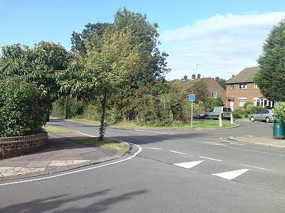
photos:
Geoff Dodd
THE AVENGERS:
Who's Who??? (John Moxey: April 1967)
After escaping from Doctor V Krelmar’s
home, The Manor House, Hambledon,
the transformed Steed and Mrs Peel drive toward London in Steeds Bentley. Later
they are pursued by Tulip as they leave London.
(Identified by Geoff Dodd, September 2009)
Q28: Woodcock Hill Farm, Barnet Lane, Borehamwood

photo:
Geoff Dodd
RANDALL AND HOPKIRK
[DECEASED]: All Work and No Pay
(Jeremy Summers: Early 1969)
Jeanie drives her mini to the Foster brothers’ mansion for a demonstration of
their spiritualist powers (filmed opposite Woodcock Hill Farm looking West
towards Deacons Hill Road).
(Identified by Geoff Dodd, September 2009)
Q29: Garrick Court, Green Lane, Edgware

photo:
Geoff Dodd
DANGER MAN:
The Mirror's New (Michael Truman: 1964)
Drake and Esser
follow Edward Bierce to the flat of Penny where he make a call to hi wife from
a nearby telephone box before entering. The following morning Bierce leaves and
Drake enters.
(Identified by Greg Mishevski,
a.k.a. SainT
and Mark O on the Britmovie Forum)
Q30: Nutt Grove, private road off Edgware Way (A41), Edgware
THE SAINT:
Marcia (John Krish: 1963)
Simon Templer
arrives in his Volvo at the Reeland
Nursing Home to interview Frank Landon.
(Identified by Simon Coward, March 2010)
GIDEON'S WAY:
The Housekeeper (Leslie Norman: 1965)
In the back of a police car Detective Superintendent Warr is told to investigate the late
Mr. Henderson’s accounts by Commander George Gideon (back projection of Apex
corner driving towards Borehamwood).
(Identified by Ian Rogers, March 2010)
Q32: Radnor Hall ,
Alum Lane, Elstree
(demolished, the site is now Elstree Household Waste Recycling Centre)
DANGER MAN: The Lonely Chair (Charles Frend:
??)
John Drake, posing as Patrick Laurence,
and Noelle Laurence are delivered by ambulance to the house where Sally
Laurence is being held.
(Identified by Simon Finch, April 2011)
THE HUMAN JUNGLE:
The Man Who Fell Apart (Roy Baker: ??)
After her fall a Bedford ambulance arrives at a
country hospital with Joy on board (same footage as seen above).
(Identified by Simon Finch, April 2011)
FILM:
MURDER SHE SAID (1961) - Ackenthorpe Hall
Q33: Deacon’s Hill Road, Elstree
THE HUMAN JUNGLE:Wild
Goose Chase (Vernon Sewell: ???)
Dr Charles Dunn and his wife Anna arrive home, 14 Church Road (59 Deacon’s
Hill Road), to find their babysitter, Mary, tied up. Later Jennifer Corder (Sally
Smith) drops Mary Thomas (Francesca Annis) off at her home (89
Deacon’s Hill Road) and invites her to join a motorised treasure hunt which
they call a 'Goose Chase'.
(Identified by Geoff Dodd, October 2013)
To R